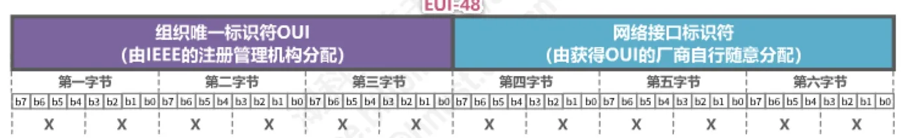
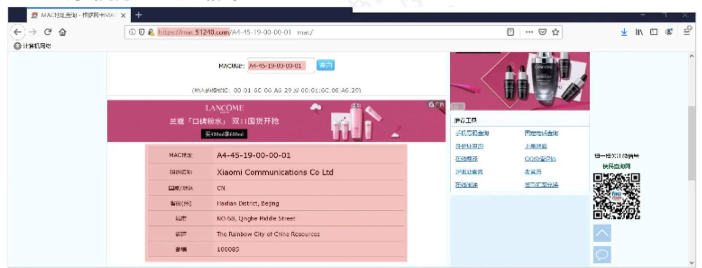
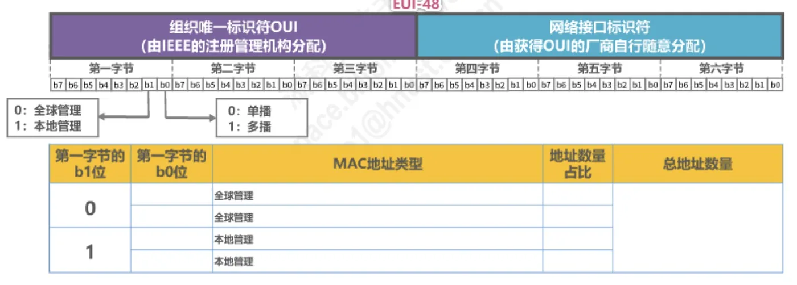
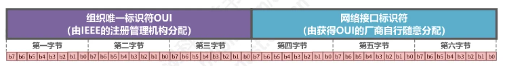
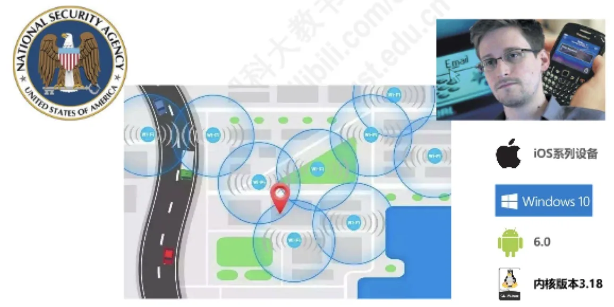

计算机通信与网络 · 第 3 章 数据链路层
3.7 MAC地址、IP地址以及ARP协议（1） —— MAC地址
数据链路层要解决的一个基本问题是「这一帧到底发给谁」。本节从点对点信道与广播信道的差别入手，说明为什么广播信道上必须给每个主机一个地址，进而引出 MAC 地址：它是谁在用、长什么样、为什么叫硬件地址又叫物理地址、如何区分单播/广播/多播。IP 地址与 ARP 协议虽属网际层，但与 MAC 地址密不可分，本节先看全局关系，再在 3.7.2、3.7.3 两节分别展开。
1. MAC 地址、IP 地址与 ARP 协议的分工
先建立一个整体印象。网络中的地址不止一种，它们分属不同的层次，各管一段路：
- MAC 地址是以太网的 MAC 子层所使用的地址，属于数据链路层；
- IP 地址是 TCP/IP 体系结构网际层所使用的地址；
- ARP 协议属于 TCP/IP 体系结构的网际层，其作用是：已知设备所分配到的 IP 地址，通过 ARP 协议获取到该设备的 MAC 地址。
需要特别留意：IP 地址和 ARP 协议属于网际层，并不属于数据链路层；但它们与 MAC 地址之间存在紧密的配合关系，日常的网络应用离不开这三者。正因为如此，讲义把它们放在一起讨论——本节讲 MAC 地址，3.7.2 节专门讲 IP 地址，3.7.3 节讲 ARP 协议。
2. 为什么广播信道上的数据链路层必须有地址
并不是所有数据链路层都需要地址，关键看信道是点对点的还是广播的。
（1）点对点信道：不需要地址
使用点对点信道的数据链路层不需要使用地址。因为链路上只有唯一一个发送方和唯一一个接收方，发出去的帧只能到达另一端，没有「认错人」的可能，地址自然就没有用武之地。
（2）广播信道：必须用地址区分各主机
使用广播信道的数据链路层必须使用地址来区分各主机。多个主机连接在同一条广播信道上时，一个主机发出的帧会沿着共享介质传播到所有主机，每台主机都会问一句：「这是发送给我的帧吗？」只有靠地址才能给出答案。
3. MAC 地址的由来与别称
当多个主机连接在同一个广播信道上，要想实现两个主机之间的通信，则每个主机都必须有一个唯一的标识，即一个数据链路层地址。每个主机发送的帧中必须携带标识发送主机和接收主机的地址：接收方取出帧的目的地址与自己的地址比对，不匹配就丢弃该帧，匹配就接受该帧。
由于这类地址是用于媒体接入控制 MAC（Media Access Control），因此被称为 MAC 地址。
MAC 地址一般被固化在网卡（网络适配器）的电可擦可编程只读存储器 EEPROM 中，所以 MAC 地址也被称为硬件地址。
MAC 地址有时也被称为物理地址。请注意：这并不意味着 MAC 地址属于网络体系结构中的物理层！它仍然是数据链路层使用的地址，只是名字里带了「物理」二字而已。这一点是常见的混淆点，例如 2018 年的一道真题就问「下列选项中，不属于物理层接口规范定义范畴的是」，正确答案是「物理地址」——接口形状、引脚功能、信号电平才是物理层接口规范的内容。
还要分清「接口」和「设备」。一般情况下，用户主机会包含两个网络适配器：有线局域网适配器（有线网卡）和无线局域网适配器（无线网卡）；每个网络适配器都有一个全球唯一的 MAC 地址。而交换机和路由器往往拥有更多的网络接口，所以会拥有更多的 MAC 地址。综上所述，严格来说，MAC 地址是对网络上各接口的唯一标识，而不是对网络上各设备的唯一标识。
4. IEEE 802 局域网的 MAC 地址格式
（1）48 位的组成与表示法
IEEE 802 局域网使用的 MAC 地址又称扩展的唯一标识符 EUI（EUI-48），共 48 个比特、6 个字节，分成前后两段：
- 前 3 个字节是组织唯一标识符 OUI（Organizationally Unique Identifier），由 IEEE 的注册管理机构分配给各个厂商；
- 后 3 个字节是网络接口标识符，由获得 OUI 的厂商自行随意分配。
书写时按字节顺序给出，常见三种表示法：
- 标准表示法（Windows 采用）：
XX-XX-XX-XX-XX-XX，例如00-0C-CF-93-8C-92； - 冒号分隔：
XX:XX:XX:XX:XX:XX，例如00:0C:CF:93:8C:92； - 点分三段（每段 4 位十六进制）：
XXXX.XXXX.XXXX，例如000C.CF93.8C92。

（2）用 OUI 反查厂商
既然前 3 个字节由 IEEE 统一分配，那么只要拿到一个 MAC 地址，就可以到 IEEE 公开的 OUI 列表（standards-oui.ieee.org/oui.txt）中查出它属于哪家厂商。下表是把前 3 字节换算成十六进制后查到的几个结果：
| OUI（前 3 字节） | 注册厂商 |
|---|---|
| 30-FB-B8 | HUAWEI TECHNOLOGIES CO., LTD |
| F4-97-C2 | Nebulon Inc |
| A4-45-19 | Xiaomi Communications Co Ltd |
| 68-DB-F5 | Amazon Technologies Inc. |
在 Windows 中也可以用 ipconfig /all 查看本机网卡的 MAC 地址（命令输出中叫「物理地址」）。例如某台机器的无线网卡地址是 A4-45-19-00-00-01，与上表对照即可确认该网卡由小米生产。

（3）b0、b1 位与四种地址类型
第一字节的最低位（记作 b0）和次低位（记作 b1）有特殊含义：
- b1 位：0 表示单播地址，1 表示多播地址；
- b0 位：0 表示全球管理，1 表示本地管理。
两个比特组合起来，把整个 EUI-48 地址空间划成四类，各类各占 1/4：
| MAC 地址类型 | 含义与用途 | 占比 |
|---|---|---|
| 全球管理单播地址 | 厂商生产网络设备（网卡、交换机、路由器）时固化，是设备出厂自带的地址 | 1/4 |
| 全球管理多播地址 | 标准网络设备所支持的多播地址，用于特定功能 | 1/4 |
| 本地管理单播地址 | 由网络管理员分配，覆盖网络接口的全球管理单播地址 | 1/4 |
| 本地管理多播地址 | 用户对主机进行软件配置，以表明其属于某些多播组 | 1/4 |
整个地址空间共有 248 = 281,474,976,710,656 个地址，即二百八十多万亿个。注意：当其余 46 位全为 1 时，整个地址就是广播地址 FF-FF-FF-FF-FF-FF。
顺带回答一个常被问到的问题：EUI-48 的地址空间会耗尽吗？IEEE 的说明是，对于使用 EUI-48 空间的应用程序，目标寿命为 100 年（直到 2080 年），同时鼓励采用 EUI-64 作为替代。

5. MAC 地址的发送顺序
MAC 地址在链路上是按什么顺序发出去的？规则有两条：
- 字节发送顺序：第一字节 → 第六字节；
- 字节内的比特发送顺序：b0 → b7。
也就是说，先发最左边字节的最低比特。这个顺序与「地址的类型位（b0、b1）在第一个字节」的事实配合起来，接收方才能在收到第一个字节后立刻判断这是单播还是多播，而不必等整个地址收完。

6. 单播、广播与多播地址举例
（1）单播 MAC 地址
主机 B 给主机 C 发送单播帧，帧的目的地址填 C 的 MAC 地址 00-0C-CF-B8-4A-82。该帧到达共享信道后，每台主机用目的地址与自己比对：地址为 00-0C-85-72-AB-72、00-E0-F9-A3-43-77 的主机发现不匹配，丢弃该帧；只有主机 C 匹配，接受该帧。
（2）广播 MAC 地址
主机 B 发送广播帧时，目的地址填 FF-FF-FF-FF-FF-FF。这个地址是全局广播地址，广播信道上所有主机都接受该帧。
（3）多播 MAC 地址
主机 A 发送多播帧给多播地址 07-E0-12-F6-2A-D8。为什么它是多播地址？把第一字节 07 写成二进制 0000 0111，其最低位 b0 为 1，按前述规则就是多播地址。有一个便于速判的经验法则：第一字节的十六进制数的最后一位不能整除 2（即 1、3、5、7、9、B、D、F）时，该地址就是多播地址。
收到多播帧后，主机是否接受取决于它是否加入了该多播组。例子中三台主机的多播组列表如下：
- 主机 B 的列表：
07-E0-12-F6-2A-D8、05-3F-EF-26-6C-B2—— 能找到，接受该帧； - 主机 C 的列表：
07-E0-12-F6-2A-D8、07-E8-5C-AB-22-3E—— 能找到，接受该帧； - 主机 D 的列表：无内容 —— 找不到，丢弃该帧。
可见多播地址不是「一对全部」，而是「一对一组」：只有加入了对应多播组的主机才会接受。
另外要注意，给主机配置多播组列表进行私有应用时，不得使用公有的标准多播地址，以免与标准功能冲突；公有标准多播地址可以在 IEEE 的公开查询页面（standards.ieee.org 的 grpmac/public.html）上查到。
7. 随机 MAC 地址
MAC 地址本是全球唯一的接口标识，这带来一个副作用：只要网卡地址不变，设备在 Wi-Fi 网络中的行为就可以被长期追踪。为此，现在的操作系统提供了随机 MAC 地址功能：iOS 系列设备在连接 Wi-Fi 时可使用随机化的硬件地址，Windows 10 也支持按网络随机化 MAC 地址，Linux 从内核版本 3.18 起同样支持。扫描 Wi-Fi 时使用随机地址，可以避免设备被跨网络识别和追踪。

本节小结
- 三种地址各司其职：MAC 地址在数据链路层（以太网 MAC 子层），IP 地址与 ARP 协议在网际层；ARP 的作用是由已知的 IP 地址求出对应的 MAC 地址；
- 点对点信道的链路层不需要地址；广播信道必须用地址区分各主机，帧中要携带源地址与目的地址，接收方比对目的地址：匹配则接受、不匹配则丢弃；
- MAC 地址固化在网卡的 EEPROM 中，又称硬件地址、物理地址，但它属于数据链路层而非物理层；它标识的是接口而不是设备，所以交换机、路由器有一堆 MAC 地址；
- IEEE 802 局域网的 MAC 地址即 EUI-48：前 3 字节 OUI 由 IEEE 分配、后 3 字节由厂商分配；可用 OUI 列表反查厂商，共有
XX-XX-XX-XX-XX-XX等三种写法； - 第一字节的 b0 位区分全球管理/本地管理、b1 位区分单播/多播，四类地址各占 1/4；全部 48 位为 1 即广播地址
FF-FF-FF-FF-FF-FF；发送顺序是字节第一→第六、字节内 b0→b7； - 用途上分单播、广播、多播三类：单播只被目的主机接受，广播被信道上所有主机接受，多播只被加入了对应多播组的主机接受；为避免被追踪，现代系统普遍支持随机 MAC 地址。